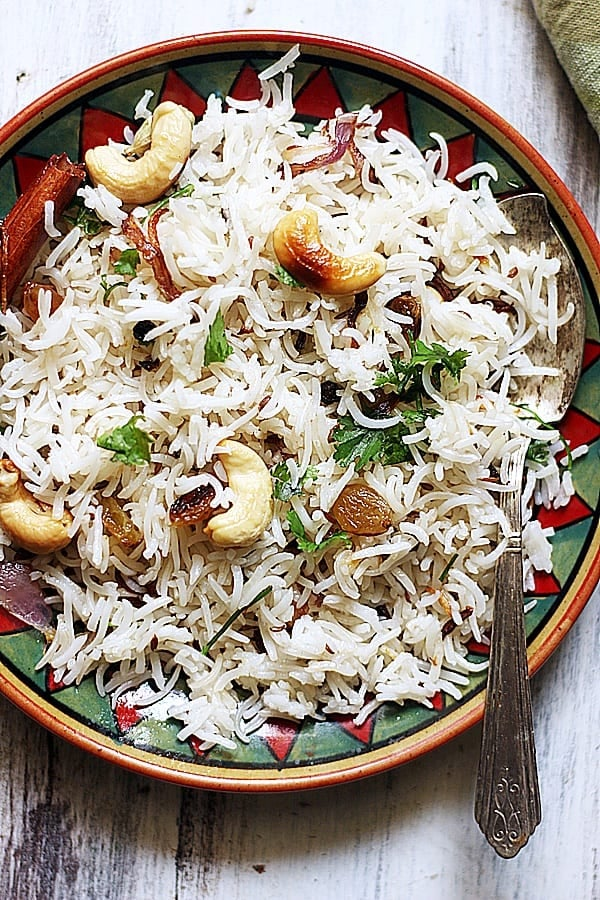

Ghee Rice

Ghee Rice is a fragrant and flavorful dish made with basmati rice cooked in ghee (clarified butter) and infused with aromatic spices. It is a popular dish in South Indian cuisine and is often served as a side dish with curries or as a main course with raita. The rice is cooked to perfection, with each grain separate and coated in the rich flavor of ghee and spices.
Ingredients:
- basmati rice
- ghee (clarified butter)
- aromatic spices
Steps:
- Rinse the basmati rice under cold water until the water runs clear, then soak it for 30 minutes and drain.
- Heat ghee in a large pot over medium heat and add the aromatic spices (such as cinnamon, cloves, cardamom, and bay leaves) and sauté until fragrant.
- Add the drained rice to the pot and stir to coat the rice with the ghee and spices.
- Add water (usually 1.5 to 2 cups of water for every cup of rice) and bring to a boil. Reduce the heat to low, cover the pot, and simmer until the rice is cooked and the water is absorbed (about 15-20 minutes).
- Fluff the rice with a fork and serve hot as a side dish with your favorite curry or as a main course with raita.